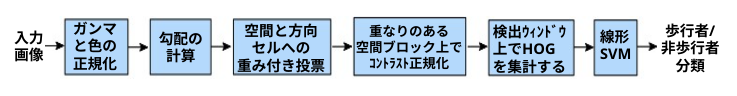
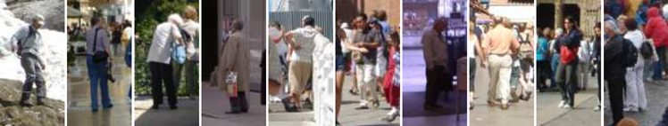
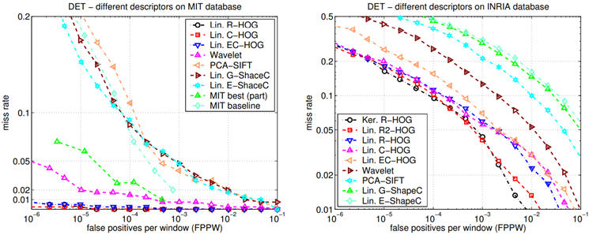
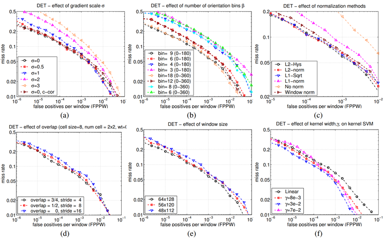
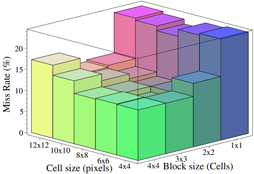
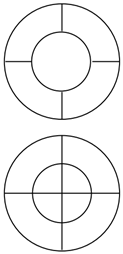
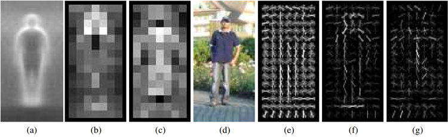

We study the question of feature sets for robust visual object recognition, adopting linear SVM based human detection as a test case. After reviewing existing edge and gradient based descriptors, we show experimentally that grids
of Histograms of Oriented Gradient (HOG) descriptors significantly outperform existing feature sets for human detection. We study the influence of each stage of the computation
on performance, concluding that fine-scale gradients, fine
orientation binning, relatively coarse spatial binning, and
high-quality local contrast normalization in overlapping descriptor blocks are all important for good results. The new
approach gives near-perfect separation on the original MIT
pedestrian database, so we introduce a more challenging
dataset containing over 1800 annotated human images with
a large range of pose variations and backgrounds.
本研究では、ロバストな視覚的物体認識のための特徴量セットについて検討する。その際、線形SVMを用いた人物検出を評価対象とする。既存のエッジや勾配に基づく記述子を概観した上で、HOG（Histograms of Oriented Gradient：勾配方向ヒストグラム）記述子をグリッド状に配置する手法が、人物検出において従来の特徴量セットよりも極めて優れた性能を示すことを実験的に明らかにする。また、計算の各段階が性能に与える影響を分析し、良好な結果を得るためには、微細な勾配、細かい方向のビン分割、比較的粗い空間的なビン分割、そして重なり合う記述子ブロック内での高品質な局所コントラスト正規化がすべて重要であると結論付ける。この新しい手法は、従来のMIT歩行者データベースにおいてほぼ完璧な識別性能を達成した。そこで本稿では、より困難なデータセットとして、多様なポーズや背景を含み、1800枚以上の人物画像にアノテーションを施した新たなデータセットを導入する。
Detecting humans in images is a challenging task owing
to their variable appearance and the wide range of poses that
they can adopt. The first need is a robust feature set that
allows the human form to be discriminated cleanly, even in
cluttered backgrounds under difficult illumination. We study
the issue of feature sets for human detection, showing that locally normalized Histogram of Oriented Gradient (HOG) descriptors provide excellent performance relative to other existing feature sets including wavelets [17,22]. The proposed
descriptors are reminiscent of edge orientation histograms
[4,5], SIFT descriptors [12] and shape contexts [1], but they
are computed on a dense grid of uniformly spaced cells and
they use overlapping local contrast normalizations for improved performance. We make a detailed study of the effects
of various implementation choices on detector performance,
taking “pedestrian detection” (the detection of mostly visible
people in more or less upright poses) as a test case. For simplicity and speed, we use linear SVM as a baseline classifier
throughout the study. The new detectors give essentially perfect results on the MIT pedestrian test set [18,17], so we have
created a more challenging set containing over 1800 pedestrian images with a large range of poses and backgrounds.
Ongoing work suggests that our feature set performs equally
well for other shape-based object classes.
画像から人間を検出することは、その外見の多様性や取り得る姿勢の幅広さから、困難な課題である。まず必要とされるのは、複雑な背景や厳しい照明条件下であっても、人間の姿を明確に識別できる堅牢な特徴量セットである。本研究では、人間検出のための特徴量セットについて検討し、局所正規化を施したHOG（Histogram of Oriented Gradient：勾配方向ヒストグラム）記述子が、ウェーブレット [17, 22] を含む既存の他の特徴量セットと比較して極めて優れた性能を示すことを明らかにする。提案する記述子は、エッジ方向ヒストグラム [4, 5]、SIFT記述子 [12]、およびシェイプコンテキスト（shape contexts）[1] と共通点を持つが、等間隔に配置された密なグリッド上で計算される点、そして性能向上のために重なり合う局所的なコントラスト正規化を用いる点が特徴である。本研究では、「歩行者検出」（概ね直立した姿勢で、全身がほぼ見えている状態の人間を検出すること）をテストケースとして、実装上の様々な選択が検出器の性能に与える影響を詳細に調査する。簡便さと処理速度を考慮し、本研究全体を通じて、ベースラインとなる分類器には線形SVMを採用した。提案した検出器は、MIT歩行者テストセット [18, 17] においてほぼ完璧な結果を示したため、より多様な姿勢や背景を含む1800枚以上の歩行者画像からなる、より難易度の高いデータセットを新たに作成した。現在進行中の研究から、本手法の特徴量セットは、形状に基づく他の物体クラスに対しても同様に良好な性能を示すことが示唆されている。
We briefly discuss previous work on human detection in
§2, give an overview of our method §3, describe our data
sets in §4 and give a detailed description and experimental
evaluation of each stage of the process in §5–6. The main
conclusions are summarized in §7.
第2節では人物検出に関する先行研究を概観し、第3節では我々の手法の概要を述べる。第4節では使用するデータセットについて説明し、第5節から第6節にかけて、各処理段階の詳細な説明と実験的評価を行う。最後に、第7節で主要な結論をまとめる。
There is an extensive literature on object detection, but
here we mention just a few relevant papers on human detection [18,17,22,16,20]. See [6] for a survey. Papageorgiou et
al [18] describe a pedestrian detector based on a polynomial
SVM using rectified Haar wavelets as input descriptors, with
a parts (subwindow) based variant in [17]. Depoortere et al
give an optimized version of this [2]. Gavrila & Philomen
[8] take a more direct approach, extracting edge images and
matching them to a set of learned exemplars using chamfer
distance. This has been used in a practical real-time pedestrian detection system [7]. Viola et al [22] build an efficient
moving person detector, using AdaBoost to train a chain of
progressively more complex region rejection rules based on
Haar-like wavelets and space-time differences. Ronfard et
al [19] build an articulated body detector by incorporating
SVM based limb classifiers over 1
st and 2
nd order Gaussian
filters in a dynamic programming framework similar to those
of Felzenszwalb & Huttenlocher [3] and Ioffe & Forsyth
[9]. Mikolajczyk et al [16] use combinations of orientationposition histograms with binary-thresholded gradient magnitudes to build a parts based method containing detectors for
faces, heads, and front and side profiles of upper and lower
body parts. In contrast, our detector uses a simpler architecture with a single detection window, but appears to give
significantly higher performance on pedestrian images.
物体検出に関する文献は膨大であるが、ここでは特に「人物検出」に関連するいくつかの論文[18, 17, 22, 16, 20]を取り上げる。概説については[6]を参照されたい。Papageorgiouら[18]は、入力記述子として整流化Haarウェーブレット（rectified Haar wavelets）を用いた多項式SVMに基づく歩行者検出器を提案しており、[17]ではその派生手法として、パーツ（サブウィンドウ）に基づく手法が示されている。Depoortereら[2]は、この手法を最適化したバージョンを提示している。GavriliaとPhilomen[8]は、より直接的なアプローチをとっており、エッジ画像を抽出し、シャンファー距離（chamfer distance）を用いて学習済みのサンプル群と照合を行う。この手法は、実用的なリアルタイム歩行者検出システム[7]に採用されている。Violaら[22]は、Haarライク・ウェーブレットおよび時空間差分に基づき、AdaBoostを用いて段階的に複雑化する領域棄却規則の連鎖を学習させることで、効率的な移動人物検出器を構築した。Ronfardら[19]は、FelzenszwalbとHuttenlocher[3]やIoffeとForsyth[9]と同様の動的計画法フレームワークにおいて、1次および2次のガウスフィルタを用いたSVMベースの四肢分類器を組み込むことで、関節構造を持つ身体の検出器を構築した。Mikolajczykら[16]は、方向・位置ヒストグラムと、勾配強度の二値閾値処理を組み合わせることで、顔、頭部、および上半身・下半身の正面・側面プロファイルを検出するパーツベースの手法を構築した。これに対し、本稿で提案する検出器は、単一の検出ウィンドウを用いるより単純なアーキテクチャでありながら、歩行者画像に対して著しく高い性能を示すと考えられる。
This section gives an overview of our feature extraction
chain, which is summarized in fig. 1. Implementation details
are postponed until §6. The method is based on evaluating
well-normalized local histograms of image gradient orientations in a dense grid. Similar features have seen increasing
use over the past decade [4,5,12,15]. The basic idea is that
local object appearance and shape can often be characterized
rather well by the distribution of local intensity gradients or
edge directions, even without precise knowledge of the corresponding gradient or
edge positions. In practice this is implemented by dividing the image window into small spatial
regions (“cells”), for each cell accumulating a local 1-D histogram of gradient directions or edge orientations over the
pixels of the cell. The combined histogram entries form the
representation. For better invariance to illumination, shadowing, etc., it is also useful to contrast-normalize the local
responses before using them. This can be done by accumulating a measure of local histogram “energy” over somewhat
larger spatial regions (“blocks”) and using the results to normalize all of the cells in the block. We will refer to the normalized descriptor blocks as Histogram of Oriented Gradient (HOG) descriptors. Tiling the detection window with
a dense (in fact, overlapping) grid of HOG descriptors and
using the combined feature vector in a conventional SVM
based window classifier gives our human detection chain
(see fig. 1).
本節では、特徴抽出のプロセスについて概説する（図1参照）。実装の詳細は第6節で述べる。本手法は、画像内の勾配方向に関する局所ヒストグラムを、密なグリッド上で適切に正規化して評価するものである。こうした特徴量は、過去10年間で広く用いられるようになってきた[4,5,12,15]。その基本的な考え方は、対象物の局所的な外観や形状は、勾配やエッジの正確な位置が不明であっても、局所的な輝度勾配やエッジ方向の分布によって十分に特徴づけられる、というものである。具体的には、画像ウィンドウを小さな空間領域（「セル」）に分割し、各セル内で画素ごとの勾配方向やエッジ方向に関する1次元ヒストグラムを算出する。これらを統合したものが特徴表現となる。照明の変化や影などに対する不変性を高めるため、局所的な応答を正規化することも有効である。これは、より広い空間領域（「ブロック」）において局所ヒストグラムの「エネルギー」を算出し、その結果を用いてブロック内のすべてのセルを正規化することで実現できる。本稿では、このように正規化された記述子ブロックを「勾配方向ヒストグラム（HOG: Histogram of Oriented Gradient）記述子」と呼ぶ。検出ウィンドウ全体をHOG記述子の密な（実際には重なり合う）グリッドで埋め尽くし、それらを統合した特徴ベクトルを、一般的なSVM（サポートベクターマシン）ベースのウィンドウ分類器に入力することで、本稿の人物検出プロセスが構成される（図1参照）。

Figure 1. An overview of our feature extraction and object detection chain. The detector window is tiled with a grid of overlapping blocks
in which Histogram of Oriented Gradient feature vectors are extracted. The combined vectors are fed to a linear SVM for object/non-object
classification. The detection window is scanned across the image at all positions and scales, and conventional non-maximum suppression
is run on the output pyramid to detect object instances, but this paper concentrates on the feature extraction process.
図1. 特徴抽出および物体検出の処理フローの概要。検出ウィンドウ内には、互いに重なり合うブロックが格子状に配置されており、各ブロックからHOG（Histogram of Oriented Gradient）特徴ベクトルが抽出される。これらを統合したベクトルが線形SVMに入力され、物体か否かの分類が行われる。検出ウィンドウは画像上のあらゆる位置およびスケールで走査され、出力されたピラミッドに対して一般的な非最大値抑制（non-maximum suppression）を適用することで個々の物体が検出されるが、本稿では特に特徴抽出のプロセスに焦点を当てる。
The use of orientation histograms has many precursors
[13,4,5], but it only reached maturity when combined with
local spatial histogramming and normalization in Lowe’s
Scale Invariant Feature Transformation (SIFT) approach to
wide baseline image matching [12], in which it provides
the underlying image patch descriptor for matching scaleinvariant keypoints. SIFT-style approaches perform remarkably well in this application [12,14]. The Shape Context
work [1] studied alternative cell and block shapes, albeit initially using only edge pixel counts without the orientation
histogramming that makes the representation so effective.
The success of these sparse feature based representations has
somewhat overshadowed the power and simplicity of HOG’s
as dense image descriptors. We hope that our study will help
to rectify this. In particular, our informal experiments suggest that even the best current keypoint based approaches are
likely to have false positive rates at least 1–2 orders of magnitude higher than our dense grid approach for human detection, mainly because none of the keypoint detectors that we
are aware of detect human body structures reliably.
方向ヒストグラムの利用には多くの先行例がある[13, 4, 5]が、それが成熟したのは、Loweによる広基線（ワイドベースライン）画像マッチングのための手法「SIFT（Scale Invariant Feature Transformation）」において、局所的な空間ヒストグラム算出および正規化と組み合わされてからである[12]。SIFTでは、この手法が、スケール不変なキーポイントを照合するための画像パッチ記述子として機能する。SIFT形式の手法は、この応用分野において極めて優れた性能を発揮する[12, 14]。「Shape Context」に関する研究[1]では、セルやブロックの形状を工夫する試みが行われたが、当初はエッジ画素の計数のみを用いており、表現を非常に効果的なものにしている「方向ヒストグラム」は取り入れられていなかった。こうしたスパースな（疎な）特徴量に基づく表現が成功を収めたことで、密な画像記述子としてのHOG（Histograms of Oriented Gradients）が持つ強力さと単純さは、ある種、影に隠れてしまっている。本研究が、この状況を是正する一助となれば幸いである。特に、我々が行った予備的な実験によれば、人物検出において、現時点で最良のキーポイントベースの手法を用いた場合であっても、我々の密なグリッド（格子状）アプローチと比較して、誤検出率（偽陽性率）が少なくとも1〜2桁高くなる可能性が高い。その主な理由は、我々が知る限り、人物の身体構造を確実に検出できるキーポイント検出器が他に存在しないためである。
The HOG/SIFT representation has several advantages. It
captures edge or gradient structure that is very characteristic
of local shape, and it does so in a local representation with
an easily controllable degree of invariance to local geometric
and photometric transformations: translations or rotations
make little difference if they are much smaller that the local
spatial or orientation bin size. For human detection, rather
coarse spatial sampling, fine orientation sampling and strong
local photometric normalization turns out to be the best strategy, presumably because it permits limbs and body segments
to change appearance and move from side to side quite a lot
provided that they maintain a roughly upright orientation.
HOG/SIFT表現には、いくつかの利点がある。この表現は、局所的な形状を非常に特徴づけるエッジや勾配の構造を捉えるものであり、局所的な幾何学的・測光的な変換（平行移動や回転など）に対する不変性の度合いを容易に制御できるという特性を備えている。具体的には、平行移動や回転の大きさが、局所的な空間ビンサイズや向きのビンサイズに比べて十分に小さければ、それらの変換が結果に与える影響はほとんどない。人物検出においては、空間サンプリングを比較的粗くし、向きのサンプリングを細かく設定した上で、強力な局所的測光正規化を行うのが最善の戦略であることがわかっている。その理由は、おそらく、四肢や身体部位が概ね直立した向きを維持している限り、それらの見え方が変化したり、左右に大きく動いたりしても、この手法であれば適切に対応できるからであろう。
Datasets. We tested our detector on two different data sets.
The first is the well-established MIT pedestrian database
[18], containing 509 training and 200 test images of pedestrians in city scenes (plus left-right reflections of these). It contains only front or back views with a relatively limited range
of poses. Our best detectors give essentially perfect results
on this data set, so we produced a new and significantly more
challenging data set, ‘INRIA’, containing 1805 64×128 images of humans cropped from a varied set of personal photos. Fig. 2 shows some samples. The people are usually
standing, but appear in any orientation and against a wide
variety of background image including crowds. Many are
bystanders taken from the image backgrounds,so there is no
particular bias on their pose. The database is available from
http://lear.inrialpes.fr/data for research purposes.
データセット。我々は、2種類の異なるデータセットを用いて検出器の評価を行った。
1つ目は、広く利用されているMIT歩行者データベース[18]である。これには、都市の風景における歩行者の画像が、学習用として509枚、テスト用として200枚含まれている（左右反転させた画像も含む）。このデータセットには正面または背面の画像しか含まれておらず、ポーズのバリエーションも比較的限られている。我々の最も優れた検出器は、このデータセットに対してほぼ完璧な結果を示した。そこで、より難易度の高い新たなデータセット「INRIA」を作成した。これには、様々な個人写真から切り出された、64×128ピクセルの人物画像が1805枚含まれている。図2にそのサンプルをいくつか示す。人物は基本的に直立しているが、向きは様々であり、群衆を含む多種多様な背景の中に配置されている。その多くは、写真の背景に写り込んでいた通行人であり、ポーズに特定の偏りはない。このデータベースは、研究目的であれば http://lear.inrialpes.fr/data から入手可能である [リンク切れ] 。

Figure 2. Some sample images from our new human detection database. The subjects are always upright, but with some partial occlusions
and a wide range of variations in pose, appearance, clothing, illumination and background.
図2. 我々の新しい人物検出データベースに含まれる画像例。対象は常に直立した姿勢をとっているが、一部が遮蔽されていたり、姿勢、外見、服装、照明、背景といった要素において多様なバリエーションが存在したりする。
Methodology. We selected 1239 of the images as positive
training examples, together with their left-right reflections
(2478 images in all). A fixed set of 12180 patches sampled
randomly from 1218 person-free training photos provided
the initial negative set. For each detector and parameter combination a preliminary detector is trained and the 1218 negative training photos are searched exhaustively for false positives (‘hard examples’). The method is then re-trained using
this augmented set (initial 12180 + hard examples) to produce the final detector. The set of hard examples is subsampled if necessary, so that the descriptors of the final training
set fit into 1.7 Gb of RAM for SVM training. This retraining process significantly improves the performance of each
detector (by 5% at 10−4 False Positives Per Window tested
(FPPW) for our default detector), but additional rounds of
retraining make little difference so we do not use them.
手法。我々は1239枚の画像を正の学習例として選択し、それらを左右反転させたものと合わせて、計2478枚の画像を用意した。また、人物が含まれていない1218枚の学習用写真からランダムにサンプリングした12180個のパッチを、初期の負の学習例セットとした。各検出器およびパラメータの組み合わせに対して予備的な検出器を学習させ、人物が含まれていない1218枚の学習用写真全体を探索して、誤検出（「ハードな例」）を抽出した。その後、この拡張されたセット（初期の12180個のパッチ＋ハードな例）を用いて再学習を行い、最終的な検出器を作成した。SVM学習時に、最終的な学習セットの記述子が1.7 GBのRAMに収まるよう、必要に応じてハードな例のセットをサブサンプリングした。この再学習プロセスにより、各検出器の性能は大幅に向上する（デフォルトの検出器の場合、ウィンドウあたりの誤検出率（FPPW）が10⁻⁴の時点で5%の性能向上）。なお、再学習をさらに繰り返しても性能にほとんど差は見られないため、追加の再学習は行わない。
To quantify detector performance we plot Detection Error Tradeoff (DET) curves on a log-log scale, i.e. miss rate
( 1−Recall or \(\frac{\text{FalseNeg}}{\text{TruePos}+\text{FalseNeg}}\) ) versus FPPW. Lower values are better. DET plots are used extensively in speech and
in NIST evaluations. They present the same information as
Receiver Operating Characteristics (ROC’s) but allow small
probabilities to be distinguished more easily. We will often
use miss rate at 10−4FPPW as a reference point for results.
This is arbitrary but no more so than, e.g. Area Under ROC.
In a multiscale detector it corresponds to a raw error rate of
about 0.8 false positives per 640×480 image tested. (The full
detector has an even lower false positive rate owing to nonmaximum suppression). Our DET curves are usually quite
shallow so even very small improvements in miss rate are
equivalent to large gains in FPPW at constant miss rate. For
example, for our default detector at 1e-4 FPPW, every 1%
absolute (9% relative) reduction in miss rate is equivalent to
reducing the FPPW at constant miss rate by a factor of 1.57.
検出器の性能を定量化するために、検出誤差トレードオフ（DET）曲線を両対数グラフ上にプロットする。具体的には、ミス率（1 − 再現率、あるいは \(\frac{\text{FalseNeg}}{\text{TruePos}+\text{FalseNeg}}\)）とFPPW（画像あたりの偽陽性数）の関係を示す。値が小さいほど性能は高い。DETプロットは、音声認識の分野やNIST（米国国立標準技術研究所）の評価において広く用いられている。これはROC（受信者操作特性）曲線と同じ情報を示すものだが、非常に小さな確率の差をより容易に識別できるという利点がある。本稿では、結果の比較基準として、FPPWが \(10^{-4}\) の時点におけるミス率を用いることが多い。この基準の設定は任意ではあるが、ROC曲線の下側の面積（AUC）を用いる場合などと同様、他の指標と比べて特に恣意的というわけではない。マルチスケール検出器の場合、この値は、640×480画素の画像1枚あたり約0.8件の偽陽性が発生するという生のエラー率に相当する。（なお、非最大値抑制（non-maximum suppression）を適用した最終的な検出器では、偽陽性率はさらに低くなる。）本稿のDET曲線は概して傾きが非常に緩やかであるため、ミス率をわずかに改善するだけでも、ミス率を一定に保ったままFPPWを大幅に低減させることと同等の効果が得られる。例えば、標準的な検出器においてFPPWが \(10^{-4}\) の場合、ミス率を（絶対値で）1%（相対値で9%）低減させることは、ミス率を一定に保ったままFPPWを1.57分の1に低減させることと同等である。
Before presenting our detailed implementation and performance analysis, we compare the overall performance of
our final HOG detectors with that of some other existing
methods. Detectors based on rectangular (R-HOG) or circular log-polar (C-HOG) blocks and linear or kernel SVM
are compared with our implementations of the Haar wavelet,
PCA-SIFT, and shape context approaches. Briefly, these approaches are as follows:
詳細な実装および性能分析を提示する前に、我々の最終的なHOG検出器の全体的な性能を、既存の他の手法と比較する。具体的には、矩形ブロック（R-HOG）や円形対数極座標ブロック（C-HOG）を用い、線形SVMやカーネルSVMを組み合わせた検出器を、我々が実装したHaarウェーブレット、PCA-SIFT、およびシェイプコンテキスト（shape context）に基づく手法と比較する。各手法の概要は以下の通りである。
Generalized Haar Wavelets. This is an extended set of oriented Haar-like wavelets similar to (but better than) that used
in [17]. The features are rectified responses from 9×9 and
12×12 oriented 1
st and 2
nd derivative box filters at 45◦
intervals and the corresponding 2
nd derivative xy filter.
一般化ハールウェーブレット。これは、[17]で用いられたものに類似しつつも、それを改良した、方向性を持つハール型ウェーブレットの拡張セットである。特徴量は、9×9および12×12のサイズで、45度間隔の方向性を持つ1次および2次の微分ボックスフィルタ、ならびに対応する2次のxy微分フィルタから得られる応答を、整流（rectify）したものである。
PCA-SIFT. These descriptors are based on projecting gradient images onto a basis learned from training images using
PCA [11]. Ke & Sukthankar found that they outperformed
SIFT for key point based matching, but this is controversial
[14]. Our implementation uses 16×16 blocks with the same
derivative scale, overlap, etc., settings as our HOG descriptors. The PCA basis is calculated using positive training images.
PCA-SIFT. この記述子（ディスクリプタ）は、勾配画像を、PCA（主成分分析）[11]を用いて学習用画像から抽出した基底へと射影するものである。KeとSukthankarは、キーポイントに基づくマッチングにおいて、これがSIFTよりも優れた性能を示すと報告したが、この点については議論がある[14]。我々の実装では、HOG記述子と同様の設定（16×16のブロック、微分スケール、重なりなど）を採用している。PCAの基底は、正例の学習用画像を用いて算出される。
Shape Contexts. The original Shape Contexts [1] used binary edge-presence voting into log-polar spaced bins, irrespective of edge orientation. We simulate this using our CHOG descriptor (see below) with just 1 orientation bin. 16
angular and 3 radial intervals with inner radius 2 pixels and
outer radius 8 pixels gave the best results. Both gradientstrength and edge-presence based voting were tested, with
the edge threshold chosen automatically to maximize detection performance (the values selected were somewhat variable, in the region of 20–50 graylevels).
Shape Contexts. オリジナルのShape Contexts [1] では、エッジの向きを考慮せず、対数極座標系（log-polar）で配置されたビンに対して、エッジの有無をバイナリ値で投票する手法が用いられていた。本稿では、我々のCHOG記述子（後述）を用い、向きに関するビンを1つのみ設定することで、この手法を再現する。角度方向に16分割、半径方向に3分割し、内半径を2ピクセル、外半径を8ピクセルとした場合に最良の結果が得られた。勾配強度に基づく投票とエッジの有無に基づく投票の双方を試行した。エッジ判定の閾値は、検出性能が最大となるように自動的に決定した（選択された値には多少の変動があり、概ね20〜50階調の範囲であった）。
Results. Fig. 3 shows the performance of the various detectors on the MIT and INRIA data sets. The HOG-based detectors greatly outperform the wavelet, PCA-SIFT and Shape
Context ones, giving near-perfect separation on the MIT test
set and at least an order of magnitude reduction in FPPW
on the INRIA one. Our Haar-like wavelets outperform MIT
wavelets because we also use 2
nd order derivatives and contrast normalize the output vector. Fig. 3(a) also shows MIT’s
best parts based and monolithic detectors (the points are interpolated from [17]), however beware that an exact comparison is not possible as we do not know how the database in
[17] was divided into training and test parts and the negative images used are not available. The performances of the
final rectangular (R-HOG) and circular (C-HOG) detectors
are very similar, with C-HOG having the slight edge. Augmenting R-HOG with primitive bar detectors (oriented 2
nd
derivatives – ‘R2-HOG’) doubles the feature dimension but
further improves the performance (by 2% at 10−4 FPPW).
Replacing the linear SVM with a Gaussian kernel one improves performance by about 3% at 10−4 FPPW, at the cost
of much higher run times1
. Using binary edge voting (ECHOG) instead of gradient magnitude weighted voting (CHOG) decreases performance by 5% at 10−4 FPPW, while
omitting orientation information decreases it by much more,
even if additional spatial or radial bins are added (by 33% at
10−4 FPPW, for both edges (E-ShapeC) and gradients (GShapeC)). PCA-SIFT also performs poorly. One reason is
that, in comparison to [11], many more (80 of 512) principal
vectors have to be retained to capture the same proportion of
the variance. This may be because the spatial registration is
weaker when there is no keypoint detector.
結果。図3は、MITおよびINRIAデータセットにおける各種検出器の性能を示している。HOGベースの検出器は、ウェーブレット、PCA-SIFT、およびShape Contextを用いた手法を大きく上回る性能を示した。MITテストセットではほぼ完全な分離を達成し、INRIAデータセットではFPPW（誤検出率）を少なくとも1桁低減させた。我々のHaarライク・ウェーブレットは、2次微分を用い、出力ベクトルに対してコントラスト正規化を行っているため、MITのウェーブレット手法よりも優れた性能を示す。図3(a)には、MITにおける最良の「パーツベース型」および「全体型（モノリシック）」検出器の結果も示されている（各点は文献[17]から補間したもの）。ただし、文献[17]においてデータセットがどのように学習用とテスト用に分割されたのかが不明であり、使用されたネガティブ画像も入手できないため、厳密な比較は不可能である点に注意されたい。最終的な矩形領域ベースの検出器（R-HOG）と円形領域ベースの検出器（C-HOG）の性能は非常に類似しているが、C-HOGの方がわずかに優れている。R-HOGにプリミティブなバー検出器（方向付き2次微分を用いたもの。以下「R2-HOG」と呼ぶ）を組み込むと、特徴量の次元数は2倍になるものの、性能はさらに向上する（FPPW 10⁻⁴の時点で2%向上）。線形SVMをガウスカーネルSVMに置き換えると、FPPW 10⁻⁴の時点で性能は約3%向上するが、その代償として実行時間が大幅に増加する¹。勾配の大きさに応じた重み付け投票（CHOG）の代わりに、バイナリ・エッジ投票（ECHOG）を用いると、FPPW 10⁻⁴の時点で性能は5%低下する。また、方向情報を除外すると性能はさらに大きく低下する。これは、空間方向や半径方向のビン（領域分割）を追加した場合であっても同様であり、エッジを用いる場合（E-ShapeC）も勾配を用いる場合（GShapeC）も、FPPW 10⁻⁴の時点で33%の性能低下が見られる。PCA-SIFTの性能も低い。その理由の一つは、[11]と比較して、同程度の分散を捉えるために、より多くの主ベクトル（512個中80個）を保持する必要があるという点です。これは、キーポイント検出器が存在しない場合、空間的な位置合わせ（レジストレーション）の精度が低下するためである可能性があります。
1 We use the hard examples generated by linear R-HOG to train the kernel R-HOG detector, as kernel R-HOG generates so few false positives that
its hard example set is too sparse to improve the generalization significantly.
我々は、線形R-HOGによって生成されたハードサンプルを用いてカーネルR-HOG検出器を学習させる。というのも、カーネルR-HOGは誤検出（偽陽性）をほとんど発生させないため、そこから得られるハードサンプルの集合が非常に疎であり、汎化性能を大幅に向上させるには不十分だからである。

Figure 3. The performance of selected detectors on (left) MIT and (right) INRIA data sets. See the text for details.
図3. MITデータセット（左）およびINRIAデータセット（右）における、選定された各検出器の性能。詳細は本文を参照のこと。
We now give details of our HOG implementations and
systematically study the effects of the various choices on detector performance. Throughout this section we refer results
to our default detector which has the following properties,
described below: RGB colour space with no gamma correction; [−1, 0, 1] gradient filter with no smoothing; linear
gradient voting into 9 orientation bins in 0◦–180◦; 16×16
pixel blocks of four 8×8 pixel cells; Gaussian spatial window with σ = 8 pixel; L2-Hys (Lowe-style clipped L2 norm)
block normalization; block spacing stride of 8 pixels (hence
4-fold coverage of each cell); 64×128 detection window;
linear SVM classifier.
本節では、我々が実装したHOGについて詳細を述べるとともに、様々な設計上の選択が検出器の性能に与える影響を体系的に調査する。本節全体を通じて、比較の基準となる「デフォルトの検出器」を設定する。この検出器の仕様は以下の通りである：RGB色空間（ガンマ補正なし）、平滑化を行わない $[-1, 0, 1]$ 勾配フィルタ、0°～180°の範囲を9つの方向に分割した線形勾配投票、8×8画素のセル4つから構成される16×16画素のブロック、$\sigma=8$ 画素のガウス空間窓、L2-Hys（Loweの手法に基づくクリッピング付きL2ノルム）によるブロック正規化、8画素間隔のブロックストライド（これにより各セルは4回重複してカバーされる）、64×128画素の検出ウィンドウ、および線形SVM分類器。
Fig. 4 summarizes the effects of the various HOG parameters on overall detection performance. These will be examined in detail below. The main conclusions are that for good
performance, one should use fine scale derivatives (essentially no smoothing), many orientation bins, and moderately
sized, strongly normalized, overlapping descriptor blocks.
図4は、HOGの各パラメータが全体的な検出性能に与える影響をまとめたものである。これらについては、以下で詳細に検討する。主な結論として、良好な性能を得るためには、微細なスケールでの微分（実質的に平滑化を行わないもの）、多数の方向ビン、そして適度なサイズを持ち、強力に正規化された、互いに重なり合う記述子ブロックを用いるべきである。

Figure 4. For details see the text. (a) Using fine derivative scale significantly increases the performance. (‘c-cor’ is the 1D cubic-corrected
point derivative). (b) Increasing the number of orientation bins increases performance significantly up to about 9 bins spaced over 0
◦
–
180◦
. (c) The effect of different block normalization schemes (see §6.4). (d) Using overlapping descriptor blocks decreases the miss rate
by around 5%. (e) Reducing the 16 pixel margin around the 64×128 detection window decreases the performance by about 3%. (f) Using
a Gaussian kernel SVM, \(\exp(−γ||x_1 − x_2||^2\)), improves the performance by about 3%.
図4。詳細は本文を参照のこと。(a) 微分スケールを細かく設定すると、性能が大幅に向上する（「c-cor」は1次元の三次補正点微分を指す）。(b) 方向ビンの数を増やすと性能が大幅に向上するが、0°～180°の範囲で9ビン程度までがその効果の限界である。(c) ブロック正規化手法の違いによる影響（§6.4を参照）。(d) 重なり合う記述子ブロックを使用すると、見逃し率（miss rate）が約5%低下する。(e) 64×128の検出ウィンドウ周囲にある16ピクセルのマージンを縮小すると、性能が約3%低下する。(f) ガウスカーネルを用いたSVM（\(\exp(−γ||x_1 − x_2||^2\))）を使用すると、性能が約3%向上する。
We evaluated several input pixel representations including grayscale, RGB and LAB colour spaces optionally with
power law (gamma) equalization. These normalizations have
only a modest effect on performance, perhaps because the
subsequent descriptor normalization achieves similar results.
We do use colour information when available. RGB and
LAB colour spaces give comparable results, but restricting
to grayscale reduces performance by 1.5% at 10−4 FPPW.
Square root gamma compression of each colour channel improves performance at low FPPW (by 1% at 10−4 FPPW)
but log compression is too strong and worsens it by 2% at
10−4 FPPW.
我々は、グレースケール、RGB、およびLAB色空間といった、いくつかの入力画素表現を評価した。これらには、必要に応じてべき乗則（ガンマ）補正を適用することも検討した。これらの正規化が性能に与える影響は限定的であったが、これはおそらく、後続の記述子正規化の段階で同様の効果が得られているためと考えられる。色情報が利用可能な場合は、それを使用している。RGB色空間とLAB色空間では同程度の性能が得られるが、グレースケールのみに限定すると、FPPW（ウィンドウあたりの偽陽性数）が10⁻⁴の条件下で性能が1.5%低下する。各色チャネルに対して平方根ガンマ圧縮を適用すると、低いFPPWの条件下で性能が向上する（FPPWが10⁻⁴のとき1%向上）。一方、対数圧縮を適用した場合は圧縮が強すぎ、同条件下で性能が2%低下する。
Detector performance is sensitive to the way in which
gradients are computed, but the simplest scheme turns out
to be the best. We tested gradients computed using Gaussian smoothing followed by one of several discrete derivative masks. Several smoothing scales were tested including σ=0 (none). Masks tested included various 1-D point
derivatives (uncentred [−1, 1], centred [−1, 0, 1] and cubiccorrected [1, −8, 0, 8, −1]) as well as 3×3 Sobel masks and
2×2 diagonal ones \(\begin{pmatrix}0 & 1\\ −1 & 0\end{pmatrix}, \begin{pmatrix} −1 & 0\\ 0 & 1\end{pmatrix}\) (the most compact centred 2-D derivative masks). Simple 1-D [−1, 0, 1] masks at
σ=0 work best. Using larger masks always seems to decrease performance, and smoothing damages it significantly:
for Gaussian derivatives, moving from σ=0 to σ=2 reduces
the recall rate from 89% to 80% at 10−4 FPPW. At σ=0,
cubic corrected 1-D width 5 filters are about 1% worse than
[−1, 0, 1] at 10−4 FPPW, while the 2×2 diagonal masks are
1.5% worse. Using uncentred [−1, 1] derivative masks also
decreases performance (by 1.5% at 10−4 FPPW), presumably because orientation estimation suffers as a result of the
x and y filters being based at different centres.
検出器の性能は勾配の計算方法に敏感であるが、最も単純な手法が最良の結果をもたらすことがわかった。我々は、ガウス平滑化を適用した後にいくつかの離散微分マスクのいずれかを用いて勾配を計算する手法を検証した。平滑化のスケールは、σ=0（平滑化なし）を含むいくつかの場合を試した。検証したマスクには、様々な1次元微分マスク（非中心型 [−1, 1]、中心型 [−1, 0, 1]、および3次補正型 [1, −8, 0, 8, −1]）に加え、3×3のSobelマスクや、2×2の対角方向マスク \(\begin{pmatrix}0 & 1\\ −1 & 0\end{pmatrix}, \begin{pmatrix} −1 & 0\\ 0 & 1\end{pmatrix}\)（最もコンパクトな中心型2次元微分マスク）が含まれる。その結果、σ=0における単純な1次元 [−1, 0, 1] マスクが最も優れた性能を示した。より大きなマスクを使用すると性能は一貫して低下し、平滑化も性能を著しく損なう。ガウス微分を用いた場合、σを0から2に変更すると、FPPW（ウィンドウあたりの偽陽性数）が10−4の条件下で、再現率（recall rate）が89%から80%に低下する。σ=0の場合、3次補正を施した幅5の1次元フィルタは、FPPWが10−4の条件下で [−1, 0, 1] マスクよりも性能が約1%低く、2×2の対角方向マスクでは1.5%低い結果となった。非中心型の [−1, 1] 微分マスクを使用した場合も性能が低下する（FPPWが10−4の条件下で1.5%低下）。これはおそらく、x方向とy方向のフィルタの中心位置が異なるために、向き（orientation）の推定精度が悪化することが原因と考えられる。
For colour images, we calculate separate gradients for
each colour channel, and take the one with the largest norm
as the pixel’s gradient vector.
カラー画像の場合、各色チャンネルについて個別に勾配を計算し、その中でノルムが最大となるものを、当該画素の勾配ベクトルとする。
The next step is the fundamental nonlinearity of the descriptor. Each pixel calculates a weighted vote for an edge
orientation histogram channel based on the orientation of the
gradient element centred on it, and the votes are accumulated into orientation bins over local spatial regions that we
call cells. Cells can be either rectangular or radial (log-polar
sectors). The orientation bins are evenly spaced over 0 – 180◦ (“unsigned” gradient) or 0 ◦– 360◦ (“signed” gradient).
To reduce aliasing, votes are interpolated bilinearly between
the neighbouring bin centres in both orientation and position. The vote is a function of the gradient magnitude at the
pixel, either the magnitude itself, its square, its square root,
or a clipped form of the magnitude representing soft presence/absence of an edge at the pixel. In practice, using the magnitude itself givesthe best results. Taking the square root
reduces performance slightly, while using binary edge presence voting decreasesit significantly (by 5% at 10−4 FPPW).
次の段階は、記述子における基本的な非線形性の導入である。各画素において、その画素を中心とする勾配要素の向きに基づき、エッジの向きに関するヒストグラムの各チャンネルに対して重み付き投票が行われる。これらの投票は、「セル」と呼ぶ局所的な空間領域ごとに、向きを示すビン（区間）へと集計される。セルは、矩形状のものもあれば、放射状（対数極座標セクター状）のものもあり得る。向きを示すビンは、0度から180度（「符号なし」勾配）あるいは0度から360度（「符号付き」勾配）の範囲に均等に配置される。エイリアシングを低減するため、投票値は、向きおよび位置の両面において、隣接するビン中心の間で双線形補間される。投票値は、その画素における勾配の大きさに依存する関数であり、勾配の大きさそのもの、その二乗、平方根、あるいは、その画素におけるエッジの有無を「ソフト」に（曖昧さを含めて）表現するために勾配の大きさをクリッピングしたものなどが用いられる。実際には、勾配の大きさそのものを用いるのが最も良い結果をもたらす。平方根を用いると性能はわずかに低下し、エッジの有無を二値的に判定して投票を行う手法では、性能が大幅に低下する（FPPWが10⁻⁴の条件下で5%の低下）。
Fine orientation coding turns out to be essential for good
performance, whereas (see below) spatial binning can be
rather coarse. As fig. 4(b) shows, increasing the number
of orientation bins improves performance significantly up to
about 9 bins, but makes little difference beyond this. This
is for bins spaced over 0
◦–180◦
, i.e. the ‘sign’ of the gradient is ignored. Including signed gradients (orientation range
0
◦–360◦
, as in the original SIFT descriptor) decreases the
performance, even when the number of bins is also doubled
to preserve the original orientation resolution. For humans,
the wide range of clothing and background colours presumably makes the signs of contrasts uninformative. However
note that including sign information does help substantially
in some other object recognition tasks, e.g. cars, motorbikes.
良好な性能を得るためには、向き（オリエンテーション）を細かく符号化することが不可欠である。一方、空間的なビニング（領域分割）は比較的粗くてもよい（後述）。図4(b)に示すように、向きのビンの数を増やすと、9個程度までは性能が著しく向上するが、それ以上増やしてもほとんど変化はない。これは0°〜180°の範囲でビンを配置した場合、すなわち勾配の「符号」を無視した場合の話である。勾配の符号を含めた場合（オリジナルのSIFT記述子と同様に0°〜360°の範囲とする）、たとえ元の向きの分解能を維持するためにビンの数を2倍にしたとしても、性能は低下してしまう。人間の場合、衣服や背景の色が非常に多様であるため、コントラストの符号は（対象の識別に際して）有益な情報にならないと考えられる。ただし、自動車やオートバイといった他の物体認識タスクにおいては、符号の情報を含めることが性能向上に大きく寄与する点に留意されたい。
Gradient strengths vary over a wide range owing to local
variations in illumination and foreground-background contrast, so effective local contrast normalization turns out to
be essential for good performance. We evaluated a number of different normalization schemes. Most of them are
based on grouping cells into larger spatial blocks and contrast normalizing each block separately. The final descriptor
is then the vector of all components of the normalized cell
responses from all of the blocks in the detection window.
In fact, we typically overlap the blocks so that each scalar
cell response contributes several components to the final descriptor vector, each normalized with respect to a different
block. This may seem redundant but good normalization is
critical and including overlap significantly improves the performance. Fig. 4(d) shows that performance increases by 4%
at 10−4 FPPW as we increase the overlap from none (stride
16) to 16-fold area / 4-fold linear coverage (stride 4).
勾配の強さは、照明の局所的な変化や、前景と背景のコントラストの違いによって大きく変動する。そのため、良好な性能を得るには、局所的なコントラスト正規化が不可欠となる。我々は、いくつかの異なる正規化手法を評価した。その多くは、セルをより大きな空間ブロックにまとめ、各ブロックに対して個別にコントラスト正規化を行うというものである。最終的な記述子（ディスクリプタ）は、検出ウィンドウ内のすべてのブロックから得られた、正規化済みのセル応答成分をすべて連結したベクトルとなる。実際には、ブロック同士を重複させるのが一般的である。これにより、個々のセル応答（スカラー値）が最終的な記述子ベクトルにおいて複数の成分として寄与することになり、それぞれの成分が異なるブロックに基づいて正規化されることになる。一見すると冗長に思えるかもしれないが、適切な正規化は極めて重要であり、このように重複を持たせることで性能が大幅に向上する。図4(d)に示す通り、重複がない場合（ストライド16）から、面積比で16倍（線形寸法比で4倍）の範囲をカバーする重複（ストライド4）へと変更すると、FPPW（ウィンドウあたりの偽陽性率）が10⁻⁴の地点において、性能が4%向上することが確認できる。
We evaluated two classes of block geometries, square or
rectangular ones partitioned into grids of square or rectangular spatial cells, and circular blocks partitioned into cells in
log-polar fashion. We will refer to these two arrangements
as R-HOG and C-HOG (for rectangular and circular HOG).
我々は、2種類のブロック形状を評価した。一つは、正方形または長方形の領域を、正方形あるいは長方形の空間セルからなるグリッド状に分割したものであり、もう一つは、円形の領域を対数極座標的な配置でセルに分割したものである。本稿では、これら2種類の構成を、それぞれR-HOGおよびC-HOG（Rectangular HOGおよびCircular HOGの略）と呼ぶことにする。
R-HOG. R-HOG blocks have many similarities to SIFT descriptors [12] but they are used quite differently. They are
computed in dense grids at a single scale without dominant
orientation alignment and used as part of a larger code vector
that implicitly encodes spatial position relative to the detection window, whereas SIFT’s are computed at a sparse set
of scale-invariant key points, rotated to align their dominant
orientations, and used individually. SIFT’s are optimized for
sparse wide baseline matching, R-HOG’s for dense robust
coding of spatial form. Other precursors include the edge
orientation histograms of Freeman & Roth [4]. We usually
use square R-HOG’s, i.e. \(ς×ς\) grids of \(η×η\) pixel cells each
containing \(β\) orientation bins, where \(ς, η, β\) are parameters.
R-HOG. R-HOGブロックは、SIFT記述子[12]と多くの共通点を持つが、その利用方法は大きく異なる。R-HOGは、単一のスケールにおいて密なグリッド状に算出される。その際、主要な向き（dominant orientation）に合わせた回転補正は行われない。また、検出ウィンドウに対する相対的な空間位置を暗黙的に符号化する、より大きなコードベクトルの一部として利用される。これに対し、SIFT記述子は、スケール不変なキーポイント（特徴点）の疎な集合に対して算出され、主要な向きに合わせて回転補正がなされた上で、個別に利用される。SIFTは疎な広基線（wide baseline）マッチングに最適化されているのに対し、R-HOGは空間的な形状を密かつ頑健に符号化することに最適化されている。その他の先行研究として、FreemanとRoth[4]によるエッジ方向ヒストグラムが挙げられる。我々は通常、正方形のR-HOGを用いる。すなわち、\(ς×ς\)個のグリッドから構成され、各グリッドは\(η×η\)画素のセルを含み、各セルには\(β\)個の方向ビンが設定される。ここで、\(ς, η, β\)はパラメータである。
Fig. 5 plots the miss rate at 10−4 FPPW w.r.t. cell size and
block size in cells. For human detection, 3×3 cell blocks
of 6×6 pixel cells perform best, with 10.4% miss-rate at
10−4 FPPW. In fact, 6–8 pixel wide cells do best irrespective of the block size – an interesting coincidence as human
limbs are about 6–8 pixels across in our images. 2×2 and
3×3 blocks work best. Beyond this, the results deteriorate:
adaptivity to local imaging conditions is weakened when the
block becomes too big, and when it is too small (1×1 block
/ normalization over orientations alone) valuable spatial information is suppressed.
図5は、FPPW（ウィンドウあたりの誤検出数）が10⁻⁴であるときのミス率を、セルサイズおよび（セル単位での）ブロックサイズに対してプロットしたものである。人物検出においては、6×6ピクセルのセルからなる3×3セルのブロックを用いた場合に最も良好な結果が得られ、FPPW 10⁻⁴においてミス率は10.4%となった。実際、ブロックサイズにかかわらず、6〜8ピクセル幅のセルが最も優れた性能を示す。これは興味深い偶然の一致である。なぜなら、我々が用いた画像において、人物の四肢の幅はおよそ6〜8ピクセルだからである。ブロックサイズとしては、2×2および3×3の場合が最適である。これ以外のサイズでは結果が悪化する。ブロックが大きすぎると局所的な撮影条件への適応性が低下し、逆に小さすぎる場合（1×1ブロック、すなわち向き成分のみに基づく正規化を行う場合）には、重要な空間情報が失われてしまうためである。

Figure 5. The miss rate at 10−4
FPPW as the cell and block sizes
change. The stride (block overlap) is fixed at half of the block size.
3×3 blocks of 6×6 pixel cells perform best, with 10.4% miss rate.
図5. セルサイズおよびブロックサイズを変化させた際の、誤検出率10⁻⁴におけるFPPW（誤検出率10⁻⁴あたりの検出漏れ率）。ストライド（ブロックの重なり）は、ブロックサイズの半分に固定されている。
6×6画素のセルから構成される3×3ブロックを用いた場合が最も性能が良く、誤検出率10⁻⁴において10.4%の検出漏れ率となった。
As in [12], it is useful to downweight pixels near the edges
of the block by applying a Gaussian spatial window to each
pixel before accumulating orientation votes into cells. This
improves performance by 1% at 10−4 FPPW for a Gaussian
with σ = 0.5 ∗ block width.
[12]と同様に、各画素の向きに関する投票をセルに集約する前に、ガウス空間窓を各画素に適用してブロック端付近の画素の重みを小さくすることは有効である。ブロック幅の0.5倍を標準偏差σとするガウス窓を用いた場合、FPPW（ウィンドウあたりの偽陽性数）が10⁻⁴の条件下で、性能が1%向上する。
We also tried including multiple block types with different cell and block sizes in the overall descriptor. This slightly
improves performance (by around 3% at 10−4 FPPW), at the
cost of greatly increased descriptor size.
また、セルサイズやブロックサイズの異なる複数のブロックタイプを、記述子全体に組み込むことも試みた。これにより性能はわずかに向上する（10⁻⁴ FPPWにおいて約3%の改善）ものの、その代償として記述子のサイズが大幅に増大する。
Besides square R-HOG blocks, we also tested vertical
(2×1 cell) and horizontal (1×2 cell) blocks and a combined
descriptor including both vertical and horizontal pairs. Vertical and vertical+horizontal pairs are significantly better than
horizontal pairs alone, but not as good as 2×2 blocks (1%
worse at 10−4 FPPW).
正方形のR-HOGブロックに加え、垂直方向（2×1セル）および水平方向（1×2セル）のブロック、さらにはそれら双方を組み合わせた記述子についても検証を行った。垂直方向のブロックや、垂直・水平方向を組み合わせた記述子は、水平方向のみのブロックよりも明らかに優れた性能を示したが、2×2ブロックには及ばなかった（FPPWが10⁻⁴の時点で1%劣る）。
C-HOG. Our circular block (C-HOG) descriptors are reminiscent of Shape Contexts [1] except that, crucially, each
spatial cell contains a stack of gradient-weighted orientation cells instead of a single orientation-independent edgepresence count. The log-polar grid was originally suggested
by the idea that it would allow fine coding of nearby structure to be combined with coarser coding of wider context,
and the fact that the transformation from the visual field to
the V1 cortex in primates is logarithmic [21]. However small
descriptors with very few radial bins turn out to give the best
performance, so in practice there is little inhomogeneity or
context. It is probably better to think of C-HOG’s simply as
an advanced form of centre-surround coding.
C-HOG. 我々の円形ブロック（C-HOG）記述子は、Shape Contexts [1] を彷彿とさせるものである。ただし、決定的な違いとして、各空間セルには、単一の（向きに依存しない）エッジ存在数ではなく、勾配重み付けされた向きセルのスタックが含まれている。対数極座標グリッド（log-polar grid）は、近傍の構造を詳細に符号化しつつ、より広いコンテキストを粗く符号化できるようにするという着想から提案されたものである。また、霊長類において、視野から一次視覚野（V1）への変換が対数的な性質を持つという事実も、その背景にある [21]。しかし実際には、半径方向のビン（分割数）が非常に少ない小さな記述子の方が最良の性能を示すため、実用上、不均一性やコンテキストといった要素はほとんど存在しない。C-HOGは、単に「中心－周辺（centre-surround）」符号化の高度な形態であると捉えるのが妥当であろう。
We evaluated two variants of the C-HOG geometry,
ones with a single circular central cell (similar to
the GLOH feature of [14]), and ones whose central cell is divided into angular sectors as in shape
contexts. We present results only for the circularcentre variants, as these have fewer spatial cells
than the divided centre ones and give the same performance in practice. A technical report will provide further details. The C-HOG layout has four parameters: the
numbers of angular and radial bins; the radius of the central
bin in pixels; and the expansion factor for subsequent radii.
At least two radial bins (a centre and a surround) and four
angular bins (quartering) are needed for good performance.
Including additional radial bins does not change the performance much, while increasing the number of angular bins
decreases performance (by 1.3% at 10−4 FPPW when going from 4 to 12 angular bins). 4 pixels is the best radius
for the central bin, but 3 and 5 give similar results. Increasing the expansion factor from 2 to 3 leaves the performance
essentially unchanged. With these parameters, neither Gaussian spatial weighting nor inverse weighting of cell votes by
cell area changes the performance, but combining these two
reduces slightly. These values assume fine orientation sampling. Shape contexts (1 orientation bin) require much finer
spatial subdivision to work well.
我々は、C-HOGジオメトリの2つのバリエーションを評価した。1つは（[14]のGLOH特徴量と同様に）中央に単一の円形セルを配置するもの、もう1つは「シェイプ・コンテキスト（shape contexts）」のように、中央のセルを角度方向に分割したもの（セクター状にしたもの）である。後者と比較して、中央が円形のバリエーションは空間セルの数が少なく、かつ実用上同等の性能が得られるため、本稿では円形中央型の結果のみを提示する。詳細についてはテクニカルレポートを参照されたい。C-HOGのレイアウトには、角度方向のビン数、半径方向のビン数、中央ビンの半径（画素単位）、およびそれ以降の半径を決定するための拡大率という、4つのパラメータが存在する。良好な性能を得るためには、少なくとも半径方向に2つのビン（中央部と周辺部）と、角度方向に4つのビン（4分割）が必要である。半径方向のビン数を増やしても性能はほとんど変化しないが、角度方向のビン数を増やすと性能は低下する（4から12に増やした場合、FPPW（誤検出率）10⁻⁴の時点で1.3%の性能低下が見られる）。中央ビンの半径は4画素とするのが最適であるが、3画素や5画素でも同様の結果が得られる。拡大率を2から3に変更しても、性能は実質的に変わらない。これらのパラメータ設定において、空間的なガウス重み付けや、セル面積に応じた投票値の逆数重み付けを行っても性能は変化しないが、これら両方を組み合わせると性能はわずかに低下する。なお、これらの値は、向き（orientation）のサンプリングを細かく行った場合を前提としている。シェイプ・コンテキスト（向きのビン数が1つ）の場合、良好な性能を得るには、空間的な分割をより細かく行う必要がある。

Block Normalization schemes. We evaluated four different block normalization schemes for each of the above HOG
geometries. Let \(\mathbf{v}\) be the unnormalized descriptor vector,
\(||\mathbf{v}||_k\) be its \(k\)-norm for \(k=1, 2,\) and \(\epsilon\) be a small constant.
The schemes are: (a) L2-norm, \(\mathbf{v} → \mathbf{v}/\sqrt{||\mathbf{v}||_2^2+\epsilon^2}\); (b)
L2-Hys, L2-norm followed by clipping (limiting the maximum values of v to 0.2) and renormalizing, as in [12]; (c)
L1-norm, \(\mathbf{v} → \mathbf{v}/(||\mathbf{v}||_1 + \epsilon)\); and (d) L1-sqrt, L1-norm followed by square root \(\mathbf{v} →\sqrt{\mathbf{v}/\sqrt{(||\mathbf{v}||_1 + \epsilon)}\), which amounts
to treating the descriptor vectors as probability distributions
and using the Bhattacharya distance between them. Fig. 4(c)
shows that L2-Hys, L2-norm and L1-sqrt all perform equally
well, while simple L1-norm reduces performance by 5%,
and omitting normalization entirely reduces it by 27%, at
10−4 FPPW. Some regularization \(\epsilon\) is needed as we evalu-
ate descriptors densely, including on empty patches, but the
results are insensitive to \(\epsilon\)’s value over a large range.
ブロック正規化手法。我々は、前述の各HOGジオメトリに対して、4種類のブロック正規化手法を評価した。ここで、\(\mathbf{v}\) を正規化前の記述子ベクトル、\(||\mathbf{v}||_k\) をその \(k\) ノルム（\(k=1, 2\)）、\(\epsilon\) を小さな定数とする。各手法は以下の通りである。(a) L2ノルム：\(\mathbf{v} → \mathbf{v}/\sqrt{||\mathbf{v}||_2^2+\epsilon^2}\)、(b) L2-Hys：[12]と同様に、L2ノルムを適用した後にクリッピング（\(\mathbf{v}\) の最大値を0.2に制限する）を行い、再度正規化するもの、(c) L1ノルム：\(\mathbf{v} → \mathbf{v}/(||\mathbf{v}||_1 + \epsilon)\)、(d) L1-sqrt：L1ノルムを適用した後に平方根をとるもの（\(\mathbf{v} → \sqrt{\mathbf{v}/(||\mathbf{v}||_1 + \epsilon)}\)）。これは、記述子ベクトルを確率分布とみなし、それらの間でバタチャリア距離（Bhattacharya distance）を用いることに相当する。図4(c)に示す通り、L2-Hys、L2ノルム、およびL1-sqrtは同等の良好な性能を示す。一方、単純なL1ノルムでは性能が5%低下し、正規化を全く行わない場合は27%低下する（FPPW = 10−4 の時点）。記述子を（空のパッチを含めて）密に評価するため、何らかの正則化項 \(\epsilon\) が必要となるが、その結果は広い範囲の \(\epsilon\) の値に対して不変（感度が低い）である。
Centre-surround normalization. We also investigated an
alternative centre-surround style cell normalization scheme,
in which the image is tiled with a grid of cells and for
each cell the total energy in the cell and its surrounding region (summed over orientations and pooled using Gaussian
weighting) is used to normalize the cell. However as fig. 4(c)
(“window norm”) shows, this decreases performance relative
to the corresponding block based scheme (by 2% at 10−4
FPPW, for pooling with σ=1 cell widths). One reason is
that there are no longer any overlapping blocks so each cell
is coded only once in the final descriptor. Including several
normalizationsfor each cell based on different pooling scales
σ provides no perceptible change in performance,so it seems
that it is the existence of several pooling regions with different spatial offsets relative to the cell that is important here,
not the pooling scale.
中心・周辺正規化（Centre-surround normalization）。我々は、中心・周辺型の正規化スキームの別案についても検討した。この手法では、画像をグリッド状のセルに分割し、各セルについて、そのセルおよび周辺領域における総エネルギー（各方向成分を合計し、ガウス重み付けを用いてプーリングしたもの）を用いて正規化を行う。しかし、図4(c)（「ウィンドウ正規化」）に示すように、この手法は、対応するブロックベースの正規化スキームと比較して性能を低下させる（σ=1セル幅のプーリングを用いた場合、FPPW 10⁻⁴において2%の低下）。その理由の一つは、ブロックの重なりがなくなるため、最終的な記述子において各セルが一度しか符号化されないことにある。また、異なるプーリング尺度σに基づく複数の正規化を各セルに適用しても、性能に目立った変化は見られない。したがって、ここで重要なのはプーリング尺度そのものではなく、セルに対して空間的なオフセットが異なる複数のプーリング領域が存在することであると考えられる。
To clarify this point, consider the R-HOG detector with
overlapping blocks. The coefficients of the trained linear
SVM give a measure of how much weight each cell of each
block can have in the final discrimination decision. Close examination of fig. 6(b,f) shows that the most important cells
are the ones that typically contain major human contours(especially the head and shoulders and the feet), normalized
w.r.t. blocks lying outside the contour. In other words —
despite the complex, cluttered backgrounds that are common in our training set — the detector cues mainly on the
contrast of silhouette contours against the background, not
on internal edges or on silhouette contours against the foreground. Patterned clothing and pose variations may make
internal regions unreliable as cues, or foreground-to-contour
transitions may be confused by smooth shading and shadowing effects. Similarly, fig. 6(c,g) illustrate that gradients
inside the person (especially vertical ones) typically count as
negative cues, presumably because this suppresses false positives in which long vertical lines trigger vertical head and
leg cells.
この点を明確にするために、ブロックを重複させる構成のR-HOG検出器を例に挙げる。学習済みの線形SVMの係数は、各ブロック内の各セルが、最終的な識別判断においてどの程度の重みを持つかを示す指標となる。図6(b, f)を詳しく検討すると、最も重要なセルは、典型的には人物の主要な輪郭（特に頭部、肩、足）を含むものであることがわかる。これらは、輪郭の外側に位置するブロックを基準として正規化されている。言い換えれば、学習データセットによく見られるような複雑で雑然とした背景であっても、この検出器は、内部のエッジや、前景と輪郭の境界ではなく、背景に対する人物のシルエットの輪郭のコントラストを主に手がかりとしているのである。柄物の衣服やポーズの変化は、人物内部の領域を手がかりとして信頼できないものにする可能性がある。また、前景から輪郭への移行部分は、滑らかな陰影や影の効果によって誤認を招く恐れがある。同様に、図6(c, g)は、人物内部の勾配（特に垂直方向の勾配）が、一般的に「負の手がかり」として機能することを示している。これはおそらく、長い垂直線が頭部や足に対応する垂直方向のセルを反応させてしまうような誤検出（偽陽性）を抑制するためと考えられる。

Figure 6. Our HOG detectors cue mainly on silhouette contours (especially the head, shoulders and feet). The most active blocks are
centred on the image background just outside the contour. (a) The average gradient image over the training examples. (b) Each “pixel”
shows the maximum positive SVM weight in the block centred on the pixel. (c) Likewise for the negative SVM weights. (d) A test image.
(e) It’s computed R-HOG descriptor. (f,g) The R-HOG descriptor weighted by respectively the positive and the negative SVM weights.
図6. 我々のHOG検出器は、主にシルエットの輪郭（特に頭部、肩、足）を手がかりとしている。最も反応の強いブロックは、輪郭のすぐ外側、背景領域に位置している。(a) 学習データ全体における平均勾配画像。(b) 各「画素」は、その画素を中心とするブロックにおけるSVMの最大正の重みを示している。(c) 同様に、SVMの負の重みについて示したもの。(d) テスト画像。(e) それから算出されたR-HOG記述子。(f, g) それぞれSVMの正の重みおよび負の重みを乗じて重み付けしたR-HOG記述子。
Our 64×128 detection window includes about 16 pixels
of margin around the person on all four sides. Fig. 4(e)
shows that this border provides a significant amount of context that helps detection. Decreasing it from 16 to 8 pixels
(48×112 detection window) decreases performance by 6%
at 10−4 FPPW. Keeping a 64×128 window but increasing
the person size within it (again decreasing the border) causes
a similar loss of performance, even though the resolution of
the person is actually increased.
我々の64×128の検出ウィンドウには、人物の周囲に4方向それぞれ約16ピクセルの余白が含まれている。図4(e)が示すように、この余白は検出に寄与する重要なコンテキスト（文脈情報）を提供している。この余白を16ピクセルから8ピクセルに減らすと（検出ウィンドウは48×112となる）、FPPW（ウィンドウあたりの偽陽性数）が10⁻⁴の条件下で、性能が6%低下する。また、64×128のウィンドウサイズを維持したまま、その中の人物のサイズを大きくした場合（つまり余白を減らした場合）も、人物の解像度自体は向上しているにもかかわらず、同様の性能低下が生じる。
By default we use a soft (C=0.01) linear SVM trained
with SVMLight [10] (slightly modified to reduce memory
usage for problems with large dense descriptor vectors). Using a Gaussian kernel SVM increases performance by about
3% at 10−4 FPPW at the cost of a much higher run time.
デフォルトでは、SVMLight [10] を用いて学習させたソフトな（C=0.01）線形SVMを使用する（なお、大規模かつ密な記述子ベクトルを扱う問題においてメモリ使用量を削減するため、SVMLightには若干の修正を加えている）。ガウスカーネルを用いたSVMを使用すると、10⁻⁴ FPPW（ウィンドウあたりの偽陽性数）における性能は約3%向上するが、その代償として実行時間は大幅に長くなる。
Overall, there are several notable findings in this work.
The fact that HOG greatly out-performs wavelets and that
any significant degree of smoothing before calculating gradients damages the HOG results emphasizes that much of
the available image information is from abrupt edges at fine
scales, and that blurring this in the hope of reducing the sensitivity to spatial position is a mistake. Instead, gradients
should be calculated at the finest available scale in the current
pyramid layer, rectified or used for orientation voting, and
only then blurred spatially. Given this, relatively coarse spatial quantization suffices (8×8 pixel cells / one limb width).
On the other hand, at least for human detection, it pays to
sample orientation rather finely: both wavelets and shape
contexts lose out significantly here.
Secondly, strong local contrast normalization is essential for good results, and traditional centre-surround style
schemes are not the best choice. Better results can be
achieved by normalizing each element (edge, cell) several
times with respect to different local supports, and treating
the results as independent signals. In our standard detector,
each HOG cell appears four times with different normalizations and including this ‘redundant’ information improves
performance from 84% to 89% at 10−4 FPPW.
全体として、本研究にはいくつかの注目すべき知見がある。
HOGがウェーブレットを大きく上回る性能を示すこと、そして勾配を計算する前に平滑化（スムージング）を施すとHOGの結果が悪化するという事実は、画像情報の大部分が微細なスケールにおける急峻なエッジに由来していることを強調している。つまり、空間的な位置に対する感度を下げようとして画像をぼかすことは誤りである。その代わり、勾配は現在のピラミッド層において利用可能な最も細かいスケールで計算し、それを整流（rectify）するか、あるいは向きの投票（orientation voting）に用いた上で、その後に空間的な平滑化を行うべきである。このことから、空間的な量子化は比較的粗いもの（8×8画素のセル、すなわち四肢の幅程度）で十分であることがわかる。
一方で、少なくとも人物検出においては、向き（orientation）をかなり細かくサンプリングすることが有効である。この点において、ウェーブレットやシェイプ・コンテキスト（shape contexts）は大きく劣ってしまう。
第二に、良好な結果を得るためには強力な局所コントラスト正規化が不可欠であり、従来型の「中心－周辺（centre-surround）」形式の手法は最適ではない。各要素（エッジやセル）を、異なる局所的なサポート領域に基づいて複数回正規化し、それらの結果を独立した信号として扱うことで、より優れた結果が得られる。我々の標準的な検出器では、各HOGセルが異なる正規化を伴って4回現れるようにしている。こうした「冗長な」情報を含めることで、FPPW（誤検出率）10⁻⁴の条件下において、性能が84%から89%へと向上する。
We have shown that using locally normalized histogram
of gradient orientations features similar to SIFT descriptors
[12] in a dense overlapping grid gives very good results for
person detection, reducing false positive rates by more than
an order of magnitude relative to the best Haar wavelet based
detector from [17]. We studied the influence of various descriptor parameters and concluded that fine-scale gradients,
fine orientation binning, relatively coarse spatial binning,
and high-quality local contrast normalization in overlapping
descriptor blocks are all important for good performance.
We also introduced a new and more challenging pedestrian
database, which is publicly available.
我々は、SIFT記述子[12]に類似した「局所正規化された勾配方向ヒストグラム」特徴量を、密に重なり合うグリッド上で用いる手法が、人物検出において非常に良好な結果をもたらすことを示した。この手法により、Haarウェーブレットに基づく最良の検出器[17]と比較して、誤検出率を1桁以上低減させることが可能となった。また、記述子の各種パラメータが与える影響を検討した結果、良好な性能を得るためには、微細なスケールの勾配、細かい方向のビン分割、比較的粗い空間的なビン分割、そして重なり合う記述子ブロック内での高品質な局所コントラスト正規化がすべて重要であると結論付けた。さらに、より難易度の高い新たな歩行者データベースを構築し、これを公開した。
Future work: Although our current linear SVM detector is
reasonably efficient – processing a 320×240 scale-space image (4000 detection windows) in less than a second – there is
still room for optimization and to further speed up detections
it would be useful to develop a coarse-to-fine or rejectionchain style detector based on HOG descriptors. We are also
working on HOG-based detectorsthat incorporate motion information using block matching or optical flow fields. Finally, although the current fixed-template-style detector has
proven difficult to beat for fully visible pedestrians, humans
are highly articulated and we believe that including a parts
based model with a greater degree of local spatial invariance would help to improve the detection results in more general
situations.
今後の課題：現在用いている線形SVM検出器は、320×240のスケールスペース画像（4000個の検出ウィンドウ）を1秒未満で処理できるなど、十分な効率を備えている。しかし、最適化の余地は依然として残されており、検出をさらに高速化するためには、HOG記述子に基づいた「粗から細へ（coarse-to-fine）」の処理や、不要な候補を段階的に排除していく「リジェクションチェーン（rejection-chain）」形式の検出器を開発することが有効であろう。また、ブロックマッチングやオプティカルフローを用いて動き情報を組み込んだ、HOGベースの検出器の開発にも取り組んでいる。最後に、現在採用している固定テンプレート形式の検出器は、全身が完全に写っている歩行者の検出においては非常に優れた性能を示すが、人体は関節によって複雑に構成されている。そのため、局所的な空間不変性をより高く備えた「パーツベースモデル」を導入することで、より一般的な状況下における検出精度の向上が期待できると考えている。
Acknowledgments. This work was supported by the European Union research projects ACEMEDIA and PASCAL. We
thanks Cordelia Schmid for many useful comments. SVMLight [10] provided reliable training of large-scale SVM’s.
謝辞. 本研究は、欧州連合（EU）の研究プロジェクトであるACEMEDIAおよびPASCALの支援を受けた。有益な助言を多数寄せてくださったCordelia Schmid氏に感謝する。また、大規模SVMの学習にはSVMLight [10]を利用した。